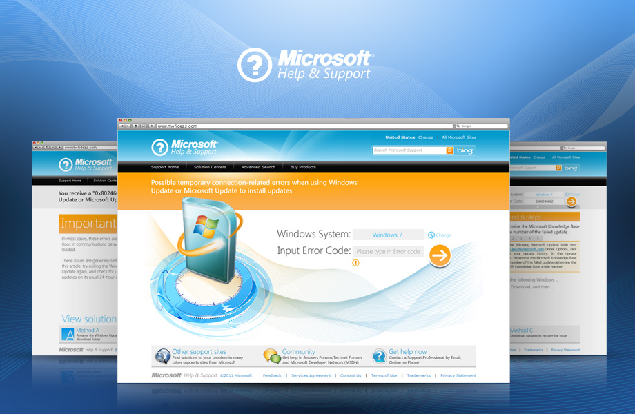
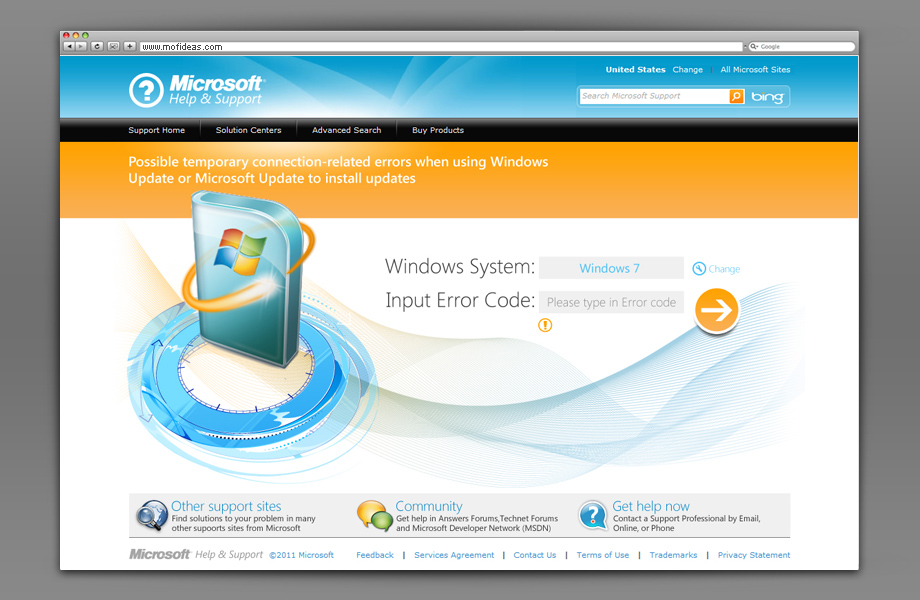
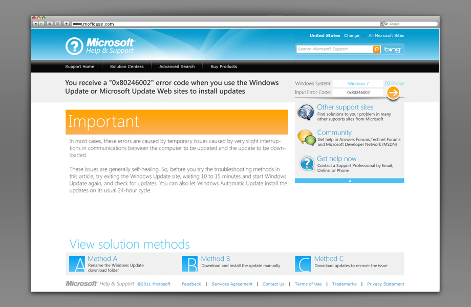
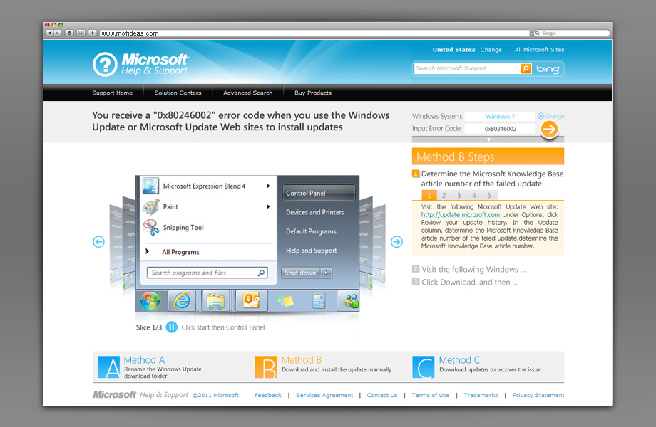

Microsoft Help & Support
A POC (Proof of Concept) project to redesign the website for Microsoft Customer Support Centre in 2011. The new design aimed to enhance user experience by effectively matching the error codes with its solutions. The approach was to effectively integrate Silverlight technology into the answer searching process by making the contents more interactive and vivid. I acted in the role of project lead designer, and was responsible for all the interaction and visual designs.




Back To All Works